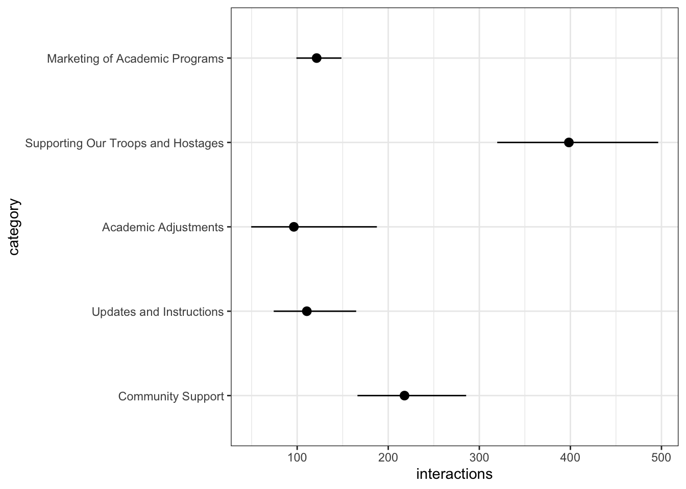

| Characteristic | IRR1 | 95% CI1 | p-value |
|---|---|---|---|
| (Intercept) | 170 | 132, 219 | <0.001 |
| university | |||
| Ariel University | — | — | |
| Bar-Ilan University | 0.77 | 0.53, 1.12 | 0.2 |
| Ben-Gurion University | 1.98 | 1.13, 3.44 | 0.016 |
| Reichman University | 0.83 | 0.55, 1.26 | 0.4 |
| Technion | 3.02 | 2.17, 4.19 | <0.001 |
| Tel Aviv University | 1.47 | 0.71, 3.02 | 0.3 |
| The Hebrew University | 1.75 | 1.00, 3.06 | 0.050 |
| The Open University | 0.80 | 0.44, 1.44 | 0.4 |
| University of Haifa | 3.43 | 2.15, 5.47 | <0.001 |
| Weizmann Institute of Science | 1.07 | 0.55, 2.11 | 0.8 |
| 1 IRR = Incidence Rate Ratio, CI = Confidence Interval | |||
Inferential report
Total interactions
By university
To compare the amount of post interactions across the different universities, we ran a quasi-poisson regression1 using university as the sole predictor. The following table presents the regression results and indicates that several universities show significantly more interactions as compared to Ariel University.
To view the differences more clearly, we make and summarize predictions for post interactions according to university, and can clearly see that the University of Haifa gets the most engagement with their posts, while Bar-Ilan University gets the least.
university Estimate Pr(>|z|) S 2.5 % 97.5 %
Ariel University 170 <0.001 Inf 132.1 218
Bar-Ilan University 131 <0.001 915.4 100.4 172
Ben-Gurion University 336 <0.001 389.7 204.8 550
Reichman University 142 <0.001 646.8 102.3 196
Technion 513 <0.001 Inf 414.8 633
Tel Aviv University 249 <0.001 188.2 126.5 490
The Hebrew University 297 <0.001 366.3 180.4 489
The Open University 135 <0.001 239.1 79.3 230
University of Haifa 583 <0.001 735.4 393.7 863
Weizmann Institute of Science 182 <0.001 196.2 97.4 340
Columns: rowid, university, estimate, p.value, s.value, conf.low, conf.high, rowid_dedup
Type: invlink(link) The graph makes these stark differences even more clear:
And for inference, we calculate pairwise comparisons of the predicted total interactions for all categories:
Term Estimate Std. Error
(Ariel University) - (Bar-Ilan University) 38.51 28.3
(Ariel University) - (Ben-Gurion University) -165.68 87.3
(Ariel University) - (Reichman University) 28.16 32.1
(Ariel University) - (Technion) -342.64 59.5
(Ariel University) - (Tel Aviv University) -79.06 88.7
(Ariel University) - (The Hebrew University) -127.10 78.6
(Ariel University) - (The Open University) 34.76 42.7
(Ariel University) - (University of Haifa) -412.93 118.7
(Ariel University) - (Weizmann Institute of Science) -12.21 62.1
(Bar-Ilan University) - (Ben-Gurion University) -204.19 86.4
(Bar-Ilan University) - (Reichman University) -10.35 29.7
(Bar-Ilan University) - (Technion) -381.15 58.2
(Bar-Ilan University) - (Tel Aviv University) -117.56 87.9
(Bar-Ilan University) - (The Hebrew University) -165.61 77.7
(Bar-Ilan University) - (The Open University) -3.75 40.9
(Bar-Ilan University) - (University of Haifa) -451.44 118.0
(Bar-Ilan University) - (Weizmann Institute of Science) -50.72 60.8
(Ben-Gurion University) - (Reichman University) 193.84 87.7
(Ben-Gurion University) - (Technion) -176.96 101.0
(Ben-Gurion University) - (Tel Aviv University) 86.63 120.6
(Ben-Gurion University) - (The Hebrew University) 38.58 113.3
(Ben-Gurion University) - (The Open University) 200.44 92.1
(Ben-Gurion University) - (University of Haifa) -247.25 144.0
(Ben-Gurion University) - (Weizmann Institute of Science) 153.47 102.5
(Reichman University) - (Technion) -370.80 60.1
(Reichman University) - (Tel Aviv University) -107.22 89.2
(Reichman University) - (The Hebrew University) -155.26 79.1
(Reichman University) - (The Open University) 6.60 43.6
(Reichman University) - (University of Haifa) -441.09 119.0
(Reichman University) - (Weizmann Institute of Science) -40.37 62.7
(Technion) - (Tel Aviv University) 263.58 102.3
(Technion) - (The Hebrew University) 215.54 93.6
(Technion) - (The Open University) 377.40 66.4
(Technion) - (University of Haifa) -70.29 129.1
(Technion) - (Weizmann Institute of Science) 330.43 80.2
(Tel Aviv University) - (The Hebrew University) -48.04 114.5
(Tel Aviv University) - (The Open University) 113.81 93.5
(Tel Aviv University) - (University of Haifa) -333.87 144.9
(Tel Aviv University) - (Weizmann Institute of Science) 66.84 103.8
(The Hebrew University) - (The Open University) 161.86 84.0
(The Hebrew University) - (University of Haifa) -285.83 139.0
(The Hebrew University) - (Weizmann Institute of Science) 114.89 95.3
(The Open University) - (University of Haifa) -447.69 122.3
(The Open University) - (Weizmann Institute of Science) -46.97 68.8
(University of Haifa) - (Weizmann Institute of Science) 400.72 130.3
z Pr(>|z|) S 2.5 % 97.5 %
1.3607 0.17360 2.5 -16.96 93.974
-1.8988 0.05759 4.1 -336.70 5.337
0.8777 0.38010 1.4 -34.72 91.046
-5.7626 < 0.001 26.8 -459.17 -226.100
-0.8909 0.37299 1.4 -252.98 94.867
-1.6167 0.10595 3.2 -281.18 26.988
0.8133 0.41606 1.3 -49.01 118.527
-3.4795 < 0.001 11.0 -645.52 -180.333
-0.1967 0.84403 0.2 -133.85 109.431
-2.3635 0.01810 5.8 -373.51 -34.863
-0.3489 0.72717 0.5 -68.47 47.778
-6.5507 < 0.001 34.0 -495.18 -267.106
-1.3376 0.18101 2.5 -289.82 54.695
-2.1325 0.03296 4.9 -317.81 -13.400
-0.0915 0.92706 0.1 -84.01 76.508
-3.8244 < 0.001 12.9 -682.79 -220.082
-0.8336 0.40451 1.3 -169.97 68.533
2.2102 0.02709 5.2 21.94 365.739
-1.7523 0.07972 3.6 -374.88 20.971
0.7185 0.47247 1.1 -149.69 322.937
0.3404 0.73352 0.4 -183.54 260.701
2.1754 0.02960 5.1 19.85 381.026
-1.7166 0.08606 3.5 -529.55 35.055
1.4967 0.13448 2.9 -47.51 354.445
-6.1680 < 0.001 30.4 -488.62 -252.973
-1.2023 0.22927 2.1 -282.00 67.572
-1.9624 0.04971 4.3 -310.32 -0.196
0.1512 0.87985 0.2 -78.95 92.150
-3.7065 < 0.001 12.2 -674.33 -207.846
-0.6440 0.51961 0.9 -163.25 82.506
2.5774 0.00996 6.7 63.14 464.025
2.3022 0.02132 5.6 32.04 399.035
5.6822 < 0.001 26.2 247.22 507.571
-0.5444 0.58613 0.8 -323.33 182.748
4.1186 < 0.001 14.7 173.18 487.669
-0.4197 0.67471 0.6 -272.41 176.320
1.2167 0.22371 2.2 -69.53 297.154
-2.3036 0.02125 5.6 -617.94 -49.801
0.6439 0.51961 0.9 -136.61 270.298
1.9268 0.05400 4.2 -2.79 326.500
-2.0567 0.03971 4.7 -558.21 -13.450
1.2056 0.22799 2.1 -71.89 301.668
-3.6603 < 0.001 12.0 -687.40 -207.968
-0.6831 0.49454 1.0 -181.73 87.794
3.0748 0.00211 8.9 145.29 656.146
Columns: term, estimate, std.error, statistic, p.value, s.value, conf.low, conf.high
Type: response And we plot so we can see better. From the plot, it is easy to see that the only differences that arenot significant are between the categories “Updates and Instructions”, “Marketing of Academic Programs”, and “Academic Adjustments”. We can also conclude that post in the category “Supporting our Troops and Hostages” received more interactions than posts in any other category.
With an offset
When we run the same model but adding an offset for the number of days a post has been up, recognizing that posts that have been up longer have had more of an opportunity to accrue likes, results are similar but the differences become less stark.
| Characteristic | IRR1 | 95% CI1 | p-value |
|---|---|---|---|
| (Intercept) | 2.52 | 1.99, 3.19 | <0.001 |
| university | |||
| Ariel University | — | — | |
| Bar-Ilan University | 1.05 | 0.72, 1.53 | 0.8 |
| Ben-Gurion University | 2.03 | 1.16, 3.56 | 0.013 |
| Reichman University | 0.82 | 0.56, 1.22 | 0.3 |
| Technion | 3.17 | 2.30, 4.36 | <0.001 |
| Tel Aviv University | 2.12 | 1.04, 4.32 | 0.039 |
| The Hebrew University | 1.68 | 0.98, 2.87 | 0.059 |
| The Open University | 0.71 | 0.40, 1.27 | 0.2 |
| University of Haifa | 3.79 | 2.42, 5.95 | <0.001 |
| Weizmann Institute of Science | 1.26 | 0.65, 2.44 | 0.5 |
| 1 IRR = Incidence Rate Ratio, CI = Confidence Interval | |||
By category
To compare the amount of post interactions across the different post categories, we ran a quasi-poisson regression using category as the sole predictor. The following table presents the regression results and shows that the category “Supporting our Troops and Hostages” receives more interactions that the rest.
| Characteristic | IRR1 | 95% CI1 | p-value |
|---|---|---|---|
| (Intercept) | 263 | 201, 345 | <0.001 |
| category | |||
| Community Support | — | — | |
| Updates and Instructions | 0.44 | 0.26, 0.74 | 0.002 |
| Academic Adjustments | 0.45 | 0.22, 0.94 | 0.033 |
| Supporting Our Troops and Hostages | 1.72 | 1.22, 2.43 | 0.002 |
| Marketing of Academic Programs | 0.47 | 0.34, 0.66 | <0.001 |
| 1 IRR = Incidence Rate Ratio, CI = Confidence Interval | |||
To view the differences more clearly, we make and summarize predictions for post interactions according to post category.
category Estimate Pr(>|z|) S 2.5 % 97.5 %
Community Support 263 <0.001 Inf 200.8 345
Updates and Instructions 116 <0.001 322.5 74.5 181
Academic Adjustments 120 <0.001 144.8 61.2 234
Supporting Our Troops and Hostages 453 <0.001 Inf 365.9 562
Marketing of Academic Programs 125 <0.001 Inf 101.9 153
Columns: rowid, category, estimate, p.value, s.value, conf.low, conf.high, rowid_dedup
Type: invlink(link) This information in graph form:
And for inference, we calculate pairwise comparisons of the predicted total interactions for all categories:
Warning: The `type="invlink"` argument is not available unless `hypothesis` is
`NULL` or a single number. The value of the `type` argument was changed
to "response" automatically. To suppress this warning, use
`type="response"` explicitly in your function call.
Term Estimate
Community Support - Updates and Instructions 147.23
Community Support - Academic Adjustments 143.61
Community Support - Supporting Our Troops and Hostages -190.10
Community Support - Marketing of Academic Programs 138.64
Updates and Instructions - Academic Adjustments -3.62
Updates and Instructions - Supporting Our Troops and Hostages -337.33
Updates and Instructions - Marketing of Academic Programs -8.59
Academic Adjustments - Supporting Our Troops and Hostages -333.71
Academic Adjustments - Marketing of Academic Programs -4.97
Supporting Our Troops and Hostages - Marketing of Academic Programs 328.74
Std. Error z Pr(>|z|) S 2.5 % 97.5 %
44.9 3.2774 0.00105 9.9 59.2 235.3
54.9 2.6176 0.00886 6.8 36.1 251.1
61.6 -3.0870 0.00202 9.0 -310.8 -69.4
38.6 3.5900 < 0.001 11.6 62.9 214.3
48.7 -0.0742 0.94083 0.1 -99.2 91.9
56.2 -6.0025 < 0.001 28.9 -447.5 -227.2
29.3 -0.2934 0.76920 0.4 -66.0 48.8
64.4 -5.1801 < 0.001 22.1 -460.0 -207.4
43.0 -0.1157 0.90793 0.1 -89.3 79.3
51.3 6.4084 < 0.001 32.7 228.2 429.3
Columns: term, estimate, std.error, statistic, p.value, s.value, conf.low, conf.high
Type: response And we plot so we can see better. From the plot, it is easy to see that the only differences that arenot significant are between the categories “Updates and Instructions”, “Marketing of Academic Programs”, and “Academic Adjustments”. We can also conclude that post in the category “Supporting our Troops and Hostages” received more interactions than posts in any other category.
Controlling for University
As we have established that there are differences in total interactions when comparing different universities, it is possible that the differences we observe across post categories are due to an imbalance in how many posts of each category are posted by each university. Using a quasi-poisson model that predicts total interactions and includes both category and university as predictors is one way to account for this potential imbalance. Model results are presented in the following table:
| Characteristic | IRR1 | 95% CI1 | p-value |
|---|---|---|---|
| (Intercept) | 139 | 96.7, 199 | <0.001 |
| university | |||
| Ariel University | — | — | |
| Bar-Ilan University | 0.90 | 0.64, 1.25 | 0.5 |
| Ben-Gurion University | 2.11 | 1.21, 3.68 | 0.008 |
| Reichman University | 0.90 | 0.62, 1.33 | 0.6 |
| Technion | 3.30 | 2.43, 4.49 | <0.001 |
| Tel Aviv University | 1.75 | 0.84, 3.63 | 0.13 |
| The Hebrew University | 1.89 | 1.10, 3.25 | 0.021 |
| The Open University | 0.91 | 0.51, 1.62 | 0.7 |
| University of Haifa | 3.34 | 2.12, 5.24 | <0.001 |
| Weizmann Institute of Science | 1.61 | 0.81, 3.19 | 0.2 |
| category | |||
| Community Support | — | — | |
| Updates and Instructions | 0.51 | 0.32, 0.81 | 0.005 |
| Academic Adjustments | 0.44 | 0.22, 0.91 | 0.026 |
| Supporting Our Troops and Hostages | 1.83 | 1.30, 2.57 | <0.001 |
| Marketing of Academic Programs | 0.56 | 0.39, 0.79 | 0.001 |
| 1 IRR = Incidence Rate Ratio, CI = Confidence Interval | |||
Most usefully, we can use the model to make predictions for all combinations of category and university, and summarise the predictions by category, averaging across all universities. Doing this, we see that the effect is slightly less pronounced, but the conclusion remains the same: posts in the category “Supporting Our Troops and Hostages” clearly receive more interactions.
category Estimate Pr(>|z|) S 2.5 % 97.5 %
Community Support 217.9 <0.001 Inf 166.2 286
Updates and Instructions 110.6 <0.001 391.2 74.3 165
Academic Adjustments 96.4 <0.001 134.6 49.5 188
Supporting Our Troops and Hostages 398.3 <0.001 Inf 319.7 496
Marketing of Academic Programs 121.4 <0.001 Inf 99.2 149
Columns: category, estimate, p.value, s.value, conf.low, conf.high
Type: invlink(link) As a graph:

Positive interactions
By category
To compare the amount of positive interactions across the different post categories, we ran a quasi-poisson regression using category as the sole predictor. The following table presents the regression results and shows that the category “Supporting our Troops and Hostages” receives more positive interactions that the rest, but not significantly more than the baseline category “Community Support”.
| Characteristic | IRR1 | 95% CI1 | p-value |
|---|---|---|---|
| (Intercept) | 205 | 154, 272 | <0.001 |
| category | |||
| Community Support | — | — | |
| Updates and Instructions | 0.47 | 0.27, 0.81 | 0.007 |
| Academic Adjustments | 0.49 | 0.23, 1.05 | 0.066 |
| Supporting Our Troops and Hostages | 1.26 | 0.88, 1.80 | 0.2 |
| Marketing of Academic Programs | 0.51 | 0.36, 0.73 | <0.001 |
| 1 IRR = Incidence Rate Ratio, CI = Confidence Interval | |||
To view the differences more clearly, we make and summarize predictions for post interactions according to post category.
category Estimate Pr(>|z|) S 2.5 % 97.5 %
Community Support 204.8 <0.001 981.4 154.2 272
Updates and Instructions 96.3 <0.001 269.9 60.4 154
Academic Adjustments 100.6 <0.001 123.3 49.8 203
Supporting Our Troops and Hostages 258.7 <0.001 Inf 208.8 321
Marketing of Academic Programs 105.2 <0.001 Inf 85.7 129
Columns: rowid, category, estimate, p.value, s.value, conf.low, conf.high, rowid_dedup
Type: invlink(link) For inference, as above, we calculate and then plot pairwise comparisons. We can see that “Supporting Our Troops and Hostages”-type posts receive significantly more positive interactions than any other kind of post except for those in the category “Community Support”, where the difference is not significant. Similarly, “Community Support”-type posts receive more positive interactions than all other posts, except for “Supporting Our Troops and Hostages”-type posts.
Term Estimate
Community Support - Updates and Instructions 108.48
Community Support - Academic Adjustments 104.22
Community Support - Supporting Our Troops and Hostages -53.90
Community Support - Marketing of Academic Programs 99.63
Updates and Instructions - Academic Adjustments -4.26
Updates and Instructions - Supporting Our Troops and Hostages -162.38
Updates and Instructions - Marketing of Academic Programs -8.85
Academic Adjustments - Supporting Our Troops and Hostages -158.12
Academic Adjustments - Marketing of Academic Programs -4.59
Supporting Our Troops and Hostages - Marketing of Academic Programs 153.53
Std. Error z Pr(>|z|) S 2.5 % 97.5 %
37.5 2.8944 0.00380 8.0 35.0 181.9
46.7 2.2325 0.02558 5.3 12.7 195.7
41.0 -1.3158 0.18824 2.4 -134.2 26.4
31.6 3.1518 0.00162 9.3 37.7 161.6
42.8 -0.0996 0.92064 0.1 -88.0 79.5
36.4 -4.4590 < 0.001 16.9 -233.8 -91.0
25.4 -0.3477 0.72804 0.5 -58.7 41.0
45.8 -3.4498 < 0.001 10.8 -248.0 -68.3
37.7 -0.1217 0.90314 0.1 -78.5 69.3
30.3 5.0597 < 0.001 21.2 94.1 213.0
Columns: term, estimate, std.error, statistic, p.value, s.value, conf.low, conf.high
Type: response Controlling for university
As above, we also run a model with university as an additional predictor and summarise predictions averaging over the different universities:
| Characteristic | IRR1 | 95% CI1 | p-value |
|---|---|---|---|
| (Intercept) | 85.6 | 57.7, 127 | <0.001 |
| university | |||
| Ariel University | — | — | |
| Bar-Ilan University | 0.92 | 0.65, 1.29 | 0.6 |
| Ben-Gurion University | 2.81 | 1.63, 4.86 | <0.001 |
| Reichman University | 1.10 | 0.77, 1.59 | 0.6 |
| Technion | 4.71 | 3.39, 6.55 | <0.001 |
| Tel Aviv University | 1.69 | 1.14, 2.51 | 0.010 |
| The Hebrew University | 2.42 | 1.31, 4.47 | 0.005 |
| The Open University | 1.16 | 0.62, 2.17 | 0.7 |
| University of Haifa | 4.13 | 2.54, 6.72 | <0.001 |
| Weizmann Institute of Science | 2.10 | 1.01, 4.40 | 0.048 |
| category | |||
| Community Support | — | — | |
| Updates and Instructions | 0.55 | 0.33, 0.90 | 0.018 |
| Academic Adjustments | 0.49 | 0.24, 1.04 | 0.063 |
| Supporting Our Troops and Hostages | 1.37 | 0.97, 1.95 | 0.078 |
| Marketing of Academic Programs | 0.62 | 0.43, 0.90 | 0.012 |
| 1 IRR = Incidence Rate Ratio, CI = Confidence Interval | |||
category Estimate Pr(>|z|) S 2.5 % 97.5 %
Community Support 160.9 <0.001 887.6 121.0 214
Updates and Instructions 88.5 <0.001 325.9 58.4 134
Academic Adjustments 79.5 <0.001 116.0 39.9 158
Supporting Our Troops and Hostages 220.6 <0.001 Inf 178.5 273
Marketing of Academic Programs 100.2 <0.001 Inf 81.8 123
Columns: category, estimate, p.value, s.value, conf.low, conf.high
Type: invlink(link) 
Negative interactions
By category
To compare the amount of negative interactions across the different post categories, we ran a quasi-poisson regression using category as the sole predictor. The following table presents the regression results and shows that the category “Supporting our Troops and Hostages” receives more negative interactions that the rest.
| Characteristic | IRR1 | 95% CI1 | p-value |
|---|---|---|---|
| (Intercept) | 8.39 | 3.53, 20.0 | <0.001 |
| category | |||
| Community Support | — | — | |
| Updates and Instructions | 0.16 | 0.03, 0.82 | 0.028 |
| Academic Adjustments | 0.12 | 0.04, 0.39 | <0.001 |
| Supporting Our Troops and Hostages | 14.9 | 6.03, 37.0 | <0.001 |
| Marketing of Academic Programs | 0.20 | 0.06, 0.70 | 0.012 |
| 1 IRR = Incidence Rate Ratio, CI = Confidence Interval | |||
To view the differences more clearly, we make and summarize predictions for negative interactions according to post category.
category Estimate Pr(>|z|) S 2.5 % 97.5 %
Community Support 8.39 <0.001 19.4 3.530 19.96
Updates and Instructions 1.35 0.667 0.6 0.343 5.32
Academic Adjustments 1.04 0.923 0.1 0.496 2.17
Supporting Our Troops and Hostages 125.34 <0.001 940.8 96.355 163.03
Marketing of Academic Programs 1.69 0.249 2.0 0.692 4.12
Columns: rowid, category, estimate, p.value, s.value, conf.low, conf.high, rowid_dedup
Type: invlink(link) For inference, as above, we calculate and then plot pairwise comparisons. It is clear that posts in the category “Supporing our Troops and Hostages” receive more negative interactions than any other category, and that pairwise difference between all the other categories are comparatively negligible.
Term Estimate
Community Support - Updates and Instructions 7.043
Community Support - Academic Adjustments 7.356
Community Support - Supporting Our Troops and Hostages -116.942
Community Support - Marketing of Academic Programs 6.705
Updates and Instructions - Academic Adjustments 0.314
Updates and Instructions - Supporting Our Troops and Hostages -123.984
Updates and Instructions - Marketing of Academic Programs -0.337
Academic Adjustments - Supporting Our Troops and Hostages -124.298
Academic Adjustments - Marketing of Academic Programs -0.651
Supporting Our Troops and Hostages - Marketing of Academic Programs 123.647
Std. Error z Pr(>|z|) S 2.5 % 97.5 %
3.828 1.840 0.0658 3.9 -0.4601 14.55
3.730 1.972 0.0486 4.4 0.0459 14.67
17.219 -6.791 <0.001 36.4 -150.6913 -83.19
3.788 1.770 0.0767 3.7 -0.7193 14.13
1.022 0.307 0.7589 0.4 -1.6902 2.32
16.842 -7.362 <0.001 42.3 -156.9935 -90.98
1.218 -0.277 0.7817 0.4 -2.7240 2.05
16.820 -7.390 <0.001 42.6 -157.2642 -91.33
0.861 -0.756 0.4496 1.2 -2.3394 1.04
16.833 7.346 <0.001 42.2 90.6555 156.64
Columns: term, estimate, std.error, statistic, p.value, s.value, conf.low, conf.high
Type: response Controlling for university
As above, we also run a model with university as an additional predictor and summarise predictions averaging over the different universities:
| Characteristic | IRR1 | 95% CI1 | p-value |
|---|---|---|---|
| (Intercept) | 9.88 | 3.89, 25.1 | <0.001 |
| university | |||
| Ariel University | — | — | |
| Bar-Ilan University | 0.97 | 0.59, 1.61 | >0.9 |
| Ben-Gurion University | 0.56 | 0.14, 2.21 | 0.4 |
| Reichman University | 0.60 | 0.30, 1.21 | 0.2 |
| Technion | 1.26 | 0.56, 2.85 | 0.6 |
| Tel Aviv University | 1.35 | 0.42, 4.32 | 0.6 |
| The Hebrew University | 0.76 | 0.34, 1.70 | 0.5 |
| The Open University | 0.35 | 0.09, 1.37 | 0.13 |
| University of Haifa | 1.05 | 0.52, 2.12 | 0.9 |
| Weizmann Institute of Science | 0.52 | 0.16, 1.69 | 0.3 |
| category | |||
| Community Support | — | — | |
| Updates and Instructions | 0.16 | 0.03, 0.82 | 0.028 |
| Academic Adjustments | 0.11 | 0.03, 0.37 | <0.001 |
| Supporting Our Troops and Hostages | 14.1 | 5.64, 35.2 | <0.001 |
| Marketing of Academic Programs | 0.20 | 0.06, 0.67 | 0.010 |
| 1 IRR = Incidence Rate Ratio, CI = Confidence Interval | |||
category Estimate Pr(>|z|) S 2.5 % 97.5 %
Community Support 7.680 <0.001 18.3 3.260 18.10
Updates and Instructions 1.253 0.748 0.4 0.316 4.97
Academic Adjustments 0.857 0.717 0.5 0.373 1.97
Supporting Our Troops and Hostages 108.196 <0.001 648.8 79.566 147.13
Marketing of Academic Programs 1.505 0.381 1.4 0.603 3.75
Columns: category, estimate, p.value, s.value, conf.low, conf.high
Type: invlink(link) Footnotes
One of the standard ways to analyze count outcomes (such as the number of interactions with a post).↩︎